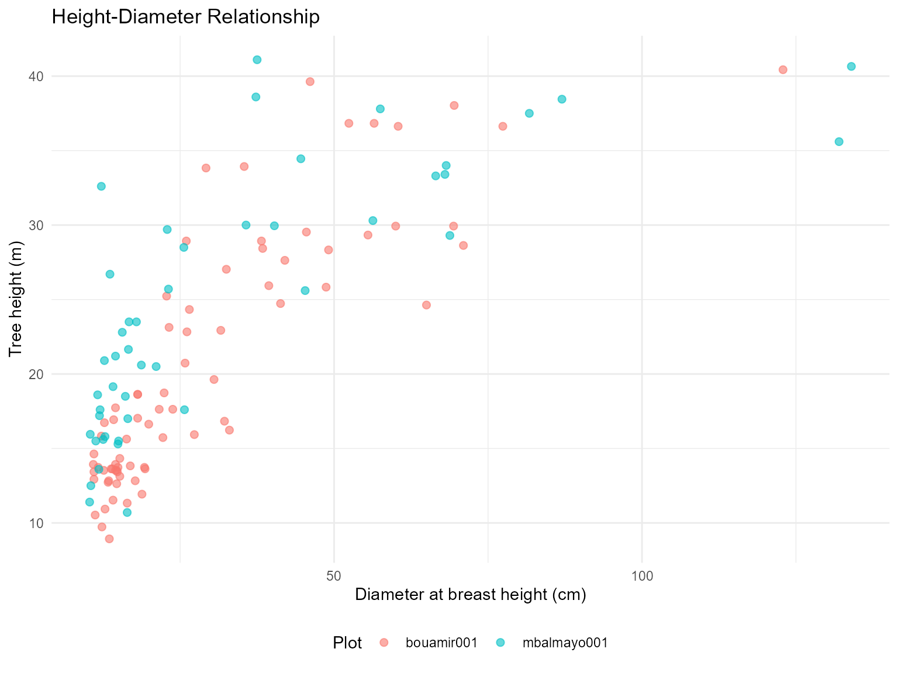

Above-Ground Biomass Estimation with BIOMASS Package
biomass-agb-estimation.RmdOverview
This vignette demonstrates how to use CafriplotsR with
the BIOMASS package to estimate above-ground biomass
(AGB) for permanent forest plots. The query_plots()
function with output_style = "permanent_plot" provides data
structures optimized for allometric analyses.
Key advantages of the integrated workflow:
- Automatic trait enrichment - Wood density and other traits are pre-integrated
-
Ready-made height-diameter table -
$height_diametertable provided by default - Structured output - Separate tables for metadata, individuals, and measurements
- Taxonomic hierarchies - Trait inheritance from species → genus → family
Prerequisites
library(CafriplotsR)
library(BIOMASS)
library(dplyr)
library(ggplot2)
# Connect to both databases with a single credential prompt
cons <- connect_cafri()
mydb <- cons$main
mydb_taxa <- cons$taxaStep 1: Extract Plot Data
Use output_style = "permanent_plot" to get structured
output optimized for biomass analysis:
# Query permanent plots with individual data
plot_data <- query_plots(
plot_name = c("bouamir001", "mbalmayo001"), # Example plots
extract_individuals = TRUE, ## extract individuals/stems
method = "1ha-IRD",
con = mydb,
census_strategy = "first", ## get first census (if more than one) - in this case, because tree heights were measure during the first census
## If wd is not available for species, the mean of wd per genus is attributed to species belonging to this genus
## if wd if not available at genus level, plot mean is given
## generate a column that indicates the source of information
traits_to_genera = TRUE
)
#> ── Building plot filter query ──────────────────────────────────────────────────
#> ℹ Attempt 1 of 10...
#> ✔ ✅ Successfully connected and fetched 2 rows.
#>
#> ── Querying plot features ──
#>
#> ✔ Found 115 feature(s) for 2 plot(s)
#> ℹ Enriching with subplot observation features
#>
#> ── Aggregating features to wide format ──
#>
#> ✔ Query completed
#> ── Processing individuals ──────────────────────────────────────────────────────
#> ℹ Selected first census date column: date_census_1
#> ℹ Fetching individuals
#> ℹ Fetching individuals...
#> ✔ Fetched 888 individual(s)
#> ℹ Loading specimen links...
#> ℹ Loading 92 specimen(s)...
#> ℹ Loading synonyms for 179 taxa...
#> ✔ Loaded 179 synonym record(s)
#> ℹ Assembling individual data...
#> ℹ Enriching with taxonomic backbone...
#> ✔ Successfully fetched 888 individual(s)
#> ✔ Processed 888 individuals
#> ── Processing traits ───────────────────────────────────────────────────────────
#> ℹ Enriching with individual-level traits
#>
#> ── Fetching individual features ──
#>
#> ── Fetching trait measurements ──
#>
#> ℹ Removed 135 measurement(s) with issues
#> ℹ Enriching with census information for first census selection
#> ✔ Selected first census for 2 plot(s)
#> ℹ Filtered out 5345 measurement(s) from other censuses
#> ✔ Query completed: 6878 measurement(s)
#>
#> ── Aggregating features by individual ──
#>
#> ℹ Aggregating 4597 numeric measurement(s)
#> ℹ Aggregating 2281 character measurement(s)
#> ✔ Aggregated 888 individual(s)
#> ℹ Enriching with taxonomic-level traits
#>
#> ── Querying taxa-level traits ──
#>
#> ℹ Fetching trait measurements for 154 taxon/taxa
#> ✔ Found 5064 measurement(s) for 142 taxa
#> ℹ Resolving taxonomic synonyms
#>
#> ── Processing traits to wide format ──
#>
#> ℹ Aggregating numeric traits
#> ℹ Aggregating categorical traits (mode)
#> ✔ Query completed
#> ✔ Added 24 numeric taxonomic trait column(s)
#> ✔ Added 16 categorical taxonomic trait column(s)
#> ℹ Aggregating traits to genus level
#> ℹ Source information added to columns starting with 'source_'
#> ℹ Attempt 1 of 10...
#> ✔ ✅ Successfully connected and fetched 10253 rows.
#> ℹ Attempt 1 of 10...
#> ✔ ✅ Successfully connected and fetched 6091 rows.
#>
#> ── Querying taxa-level traits ──
#>
#> ℹ Fetching trait measurements for 13111 taxon/taxa
#> ✔ Found 19950 measurement(s) for 2492 taxa
#> ℹ Resolving taxonomic synonyms
#> ℹ Including synonyms: 2492 taxa expanded to 6053 taxa
#> ℹ Adding taxonomic information
#> ✔ Query completed
#> ℹ Setting wood density SD to averaged species and genus level according to BIOMASS dataset
#>
#> ── Fetching trait measurements ──
#>
#> ℹ Removed 135 measurement(s) with issues
#> ℹ Enriching with census information
#> ✔ Query completed: 4112 measurement(s)
#>
#> ── Querying taxa-level traits ──
#>
#> ℹ Fetching trait measurements for 154 taxon/taxa
#> ✔ Found 5064 measurement(s) for 142 taxa
#> ℹ Resolving taxonomic synonyms
#> ✔ Query completed
#> ! ids removed - remove_ids = TRUE
#> ℹ Auto-detected output style: 'permanent_plot' based on method field
#> ✔ Output restructured using 'permanent_plot' style. Use names() to see available tables.
# Check structure
names(plot_data)
#> [1] "metadata" "individuals" "height_diameter" "data_sources"
# $metadata - Plot-level information
# $individuals - Individual tree data with traits
# $height_diameter - Height-diameter pairs (ready for modeling)The permanent_plot output style provides:
-
$metadata: Plot coordinates, area, census dates, investigators -
$individuals: Complete tree inventory with taxonomic traits -
$height_diameter: Pre-filtered height-diameter pairs for allometric modeling
Step 2: Explore the Data
Individual Tree Data
The individuals table includes automatically enriched traits:
# Check what data we have
str(plot_data$individuals)
#> tibble [888 × 36] (S3: tbl_df/tbl/data.frame)
#> $ id_n : int [1:888] 248314 248318 248322 248326 248330 248334 248338 248342 248346 248350 ...
#> $ plot_name : chr [1:888] "bouamir001" "bouamir001" "bouamir001" "bouamir001" ...
#> $ tag : num [1:888] 1 2 3 4 5 6 7 8 9 10 ...
#> $ family : chr [1:888] "Annonaceae" "Lecythidaceae" "Olacaceae" "Annonaceae" ...
#> $ genus : chr [1:888] "Xylopia" "Petersianthus" "Heisteria" "Greenwayodendron" ...
#> $ species : chr [1:888] "Xylopia quintasii" "Petersianthus macrocarpus" "Heisteria parvifolia" "Greenwayodendron suaveolens" ...
#> $ dbh : num [1:888] 17.7 62.4 57.7 25.9 22.8 ...
#> $ idtax_individual_f : int [1:888] 6737 626 245 219 1535 344939 828 1757 784 1153 ...
#> $ quadrat : chr [1:888] "0_0" "0_0" "0_0" "0_0" ...
#> $ height : num [1:888] 12.8 NA NA NA NA ...
#> $ census_date : Date[1:888], format: "2018-12-02" "2018-12-02" ...
#> $ number_of_stem : int [1:888] NA NA NA NA NA NA NA NA NA NA ...
#> $ taxa_mean_wood_density : num [1:888] 0.75 0.64 0.74 0.64 0.51 0.56 0.64 0.53 0.8 0.61 ...
#> $ taxa_n_wood_density : num [1:888] 6 96 10 70 12 1 14 36 31 44 ...
#> $ taxa_sd_wood_density : num [1:888] 0.0708 0.0708 0.0708 0.0708 0.0708 ...
#> $ source_taxa_mean_wood_density : chr [1:888] "species" "species" "species" "species" ...
#> $ source_taxa_n_wood_density : chr [1:888] "species" "species" "species" "species" ...
#> $ source_taxa_sd_wood_density : chr [1:888] "species" "species" "species" "species" ...
#> $ taxa_sd_wood_density_plot_level : num [1:888] 0.0762 0.0762 0.0762 0.0762 0.0762 ...
#> $ pom : num [1:888] 1.3 1.3 1.3 1.3 1.3 1.3 1.3 1.8 3.3 1.3 ...
#> $ taxa_mean_stem_diameter_p95 : num [1:888] 35 76.3 50 40 23.5 ...
#> $ taxa_n_stem_diameter_p95 : num [1:888] 1 1 1 1 1 1 1 1 1 1 ...
#> $ taxa_sd_stem_diameter_p95 : num [1:888] 13.9 NA 10.32 13.02 6.36 ...
#> $ source_taxa_mean_stem_diameter_p95: chr [1:888] "species" "species" "species" "species" ...
#> $ source_taxa_n_stem_diameter_p95 : chr [1:888] "species" "species" "species" "species" ...
#> $ source_taxa_sd_stem_diameter_p95 : chr [1:888] "genus" NA "genus" "genus" ...
#> $ observations : chr [1:888] NA "rejets" NA NA ...
#> $ position_x : num [1:888] 3 NA NA NA NA 17.2 NA 13.4 19 NA ...
#> $ position_x_iphone : num [1:888] 2.323 0.801 4.587 10.825 15.836 ...
#> $ position_y : num [1:888] 10 NA NA NA NA 15 NA 6.5 5 NA ...
#> $ position_y_iphone : num [1:888] 10.3 15 19.7 19.9 17.5 ...
#> $ taxa_phenology : chr [1:888] "evergreen" "deciduous" "evergreen" "evergreen" ...
#> $ source_taxa_phenology : chr [1:888] "species" "species" "genus" "species" ...
#> $ taxa_succession_guild : chr [1:888] "non-pioneer light demanding" "non-pioneer light demanding" "shade-tolerant" "shade-tolerant" ...
#> $ source_taxa_succession_guild : chr [1:888] "species" "species" "genus" "species" ...
#> $ stem_status : chr [1:888] "alive" "alive" "alive" "alive" ...
# Key columns for biomass:
# - dbh (stem_diameter): Diameter at breast height (cm)
# - species (tax_sp_level): Species name
# - wood_density_mean (taxa_mean_wood_density): Mean wood density (g/cm³)
# - wood_density_sd (taxa_sd_wood_density): SD for error propagation
# - source_taxa_mean_wood_density (taxa_sd_wood_density): source of information for wood density
# Summary of wood density availability
plot_data$individuals %>%
summarise(
n_total = n(),
n_with_wd = sum(!is.na(taxa_mean_wood_density)),
pct_with_wd = round(100 * n_with_wd / n_total, 1),
mean_wd = mean(taxa_mean_wood_density, na.rm = TRUE)
)
#> # A tibble: 1 × 4
#> n_total n_with_wd pct_with_wd mean_wd
#> <int> <int> <dbl> <dbl>
#> 1 888 888 100 0.639Note: Wood density traits are automatically: -
Retrieved from the taxa database - Inherited from species → genus →
family when species-level data unavailable - Averaged at plot level when
no taxonomic match found (if traits_to_genera = TRUE)
Height-Diameter Data
The $height_diameter table is pre-filtered and
ready for modeling:
# Height-diameter pairs (automatically filtered)
head(plot_data$height_diameter)
#> # A tibble: 6 × 8
#> id_n plot_name tag D H POM census_name census_date
#> <int> <chr> <dbl> <dbl> <dbl> <dbl> <chr> <date>
#> 1 248314 bouamir001 1 17.7 12.8 1.3 census_1 2018-12-02
#> 2 248334 bouamir001 6 22.2 15.7 1.3 census_1 2018-12-02
#> 3 248342 bouamir001 8 38.4 28.4 1.8 census_1 2018-12-02
#> 4 248346 bouamir001 9 123. 40.4 3.3 census_1 2018-12-02
#> 5 248370 bouamir001 15 48.7 25.8 1.3 census_1 2018-12-02
#> 6 248738 bouamir001 107 14.7 13.5 1.3 census_1 2018-12-02
# This table includes:
# - id_n: Individual ID
# - plot_name: Plot identifier
# - tag: Tree tag
# - D: Diameter (dbh in cm)
# - H: Height (tree height in m)
# - POM: Point of measurement (if available)
# Summary
plot_data$height_diameter %>%
group_by(plot_name) %>%
summarise(
n_pairs = n(),
mean_dbh = round(mean(D), 1),
mean_height = round(mean(H), 1),
dbh_range = paste(round(min(D), 1), "-", round(max(D), 1)),
height_range = paste(round(min(H), 1), "-", round(max(H), 1))
)
#> # A tibble: 2 × 6
#> plot_name n_pairs mean_dbh mean_height dbh_range height_range
#> <chr> <int> <dbl> <dbl> <chr> <chr>
#> 1 bouamir001 76 28.9 20.4 10.9 - 122.9 8.9 - 40.4
#> 2 mbalmayo001 46 33.2 24.7 10.3 - 134 10.7 - 41.1Step 3: Build Height-Diameter Models
Use the pre-filtered $height_diameter table directly
with BIOMASS:
Option A: Single Model (All Plots)
# Fit global height-diameter model
hd_model_global <- BIOMASS::modelHD(
D = plot_data$height_diameter$D,
H = plot_data$height_diameter$H,
method = "weibull",
useWeight = TRUE
)
# Check model fit
summary(hd_model_global)
#> Length Class Mode
#> input 2 -none- list
#> model 6 nls list
#> residuals 122 -none- numeric
#> method 1 -none- character
#> predicted 122 -none- numeric
#> RSE 1 -none- numeric
#> weighted 1 -none- logical
# Residual Standard Error for uncertainty propagation
RSE_global <- hd_model_global$RSE
print(paste("RSE:", round(RSE_global, 3)))
#> [1] "RSE: 5.029"Option B: Plot-Specific Models
For plots with sufficient height measurements (>15 pairs recommended):
# Build separate models per plot
hd_models_by_plot <- plot_data$height_diameter %>%
group_by(plot_name) %>%
filter(n() >= 15) %>% # Require at least 15 H-D pairs
group_split() %>%
lapply(function(plot_df) {
tryCatch({
model <- BIOMASS::modelHD(
D = plot_df$D,
H = plot_df$H,
method = "weibull",
useWeight = TRUE
)
list(
plot_name = unique(plot_df$plot_name),
model = model,
RSE = model$RSE,
n = nrow(plot_df)
)
}, error = function(e) {
NULL # Return NULL if model fails
})
}) %>%
Filter(Negate(is.null), .) # Remove failed models
# Summary
cat(sprintf("Built %d plot-specific models\n", length(hd_models_by_plot)))
#> Built 2 plot-specific modelsVisualize H-D Relationships
# Plot height-diameter data with fitted curve
ggplot(plot_data$height_diameter, aes(x = D, y = H)) +
geom_point(aes(color = plot_name), alpha = 0.6, size = 2) +
geom_smooth(method = "nls",
formula = y ~ a * (1 - exp(-b * x^c)),
method.args = list(start = list(a = 40, b = 0.05, c = 1)),
se = TRUE, color = "black", linewidth = 1.5) +
labs(
title = "Height-Diameter Relationship",
x = "Diameter at breast height (cm)",
y = "Tree height (m)",
color = "Plot"
) +
theme_minimal() +
theme(legend.position = "bottom")
#> Warning: Failed to fit group -1.
#> Caused by error in `pred$fit`:
#> ! $ operator is invalid for atomic vectors
Step 4: Predict Missing Heights
Most trees don’t have height measurements. Use the H-D model to predict them:
# Prepare data for AGB estimation
agb_data <- plot_data$individuals %>%
filter(!is.na(dbh)) %>% # Must have diameter
mutate(
# Predict height using global model (or plot-specific if available)
H_predicted = BIOMASS::retrieveH(
D = dbh,
model = hd_model_global
)$H,
# Use measured height if available, otherwise predicted
H_final = ifelse(!is.na(height), height, H_predicted),
# Assign RSE for uncertainty
H_RSE = RSE_global
)
# Check prediction success
agb_data %>%
summarise(
n_total = n(),
n_measured = sum(!is.na(height)),
n_predicted = sum(is.na(height)),
pct_predicted = round(100 * n_predicted / n_total, 1)
)
#> # A tibble: 1 × 4
#> n_total n_measured n_predicted pct_predicted
#> <int> <int> <int> <dbl>
#> 1 834 122 712 85.4Using plot-specific models (if available):
# Create lookup for plot-specific RSE
plot_rse <- data.frame(
plot_name = sapply(hd_models_by_plot, function(x) x$plot_name),
RSE_plot = sapply(hd_models_by_plot, function(x) x$RSE)
)
# Predict with plot-specific models where available
agb_data <- agb_data %>%
filter(!is.na(dbh)) %>%
left_join(plot_rse, by = "plot_name") %>%
mutate(
# Use plot-specific RSE if available, otherwise global
H_RSE = ifelse(!is.na(RSE_plot), RSE_plot, RSE_global),
# Predict heights (would need to loop through plot-specific models)
H_final = ifelse(!is.na(height), height, H_predicted)
)Step 5: Estimate Above-Ground Biomass
Now we have all required inputs for BIOMASS:
- D: Diameter (dbh)
- WD: Wood density (automatically from database!)
- H: Height (measured or predicted)
- Errors: SD for wood density, RSE for height
Check Data Completeness
# Summary of required variables
summary(agb_data[, c("dbh", "taxa_mean_wood_density", "H_final", "H_RSE")])
#> dbh taxa_mean_wood_density H_final H_RSE
#> Min. : 10.0 Min. :0.290 Min. : 8.93 Min. :4.280
#> 1st Qu.: 12.3 1st Qu.:0.590 1st Qu.:16.39 1st Qu.:4.280
#> Median : 16.2 Median :0.650 Median :19.07 Median :5.299
#> Mean : 23.3 Mean :0.639 Mean :20.97 Mean :4.824
#> 3rd Qu.: 24.8 3rd Qu.:0.710 3rd Qu.:23.86 3rd Qu.:5.299
#> Max. :175.0 Max. :0.870 Max. :41.10 Max. :5.299
# Check for missing data
agb_data %>%
summarise(
missing_dbh = sum(is.na(dbh)),
missing_wd = sum(is.na(taxa_mean_wood_density)),
missing_height = sum(is.na(H_final)),
complete_cases = sum(!is.na(dbh) & !is.na(taxa_mean_wood_density) & !is.na(H_final))
)
#> # A tibble: 1 × 4
#> missing_dbh missing_wd missing_height complete_cases
#> <int> <int> <int> <int>
#> 1 0 0 0 834Single AGB Estimate (No Error Propagation)
Quick estimate without uncertainty:
# Simple AGB calculation using Chave et al. 2014 equation
agb_data <- agb_data %>%
filter(!is.na(dbh) & !is.na(taxa_mean_wood_density) & !is.na(H_final)) %>%
mutate(
AGB_kg = BIOMASS::computeAGB(
D = dbh,
WD = taxa_mean_wood_density,
H = H_final
)
)
# Plot-level AGB
agb_by_plot <- agb_data %>%
group_by(plot_name) %>%
summarise(
n_trees = n(),
total_AGB_Mg = sum(AGB_kg)
)
print(agb_by_plot)
#> # A tibble: 2 × 3
#> plot_name n_trees total_AGB_Mg
#> <chr> <int> <dbl>
#> 1 bouamir001 389 334.
#> 2 mbalmayo001 445 445.Summary
This vignette demonstrated the complete workflow for AGB estimation
using CafriplotsR and BIOMASS:
- ✅ Extract structured data with
output_style = "permanent_plot" - ✅ Use pre-filtered H-D data from
$height_diametertable - ✅ Build allometric models with BIOMASS::modelHD()
- ✅ Leverage integrated traits - wood density automatically included
Key advantages:
- No manual trait matching - wood density pre-integrated from taxa database
- Ready-made H-D table - filtered and formatted for BIOMASS
Additional Resources
- BIOMASS package: Réjou-Méchain et al. (2017) https://CRAN.R-project.org/package=BIOMASS
- Allometric equations: Chave et al. (2014) https://doi.org/10.1111/gcb.12629
-
CafriplotsR queries: See
vignette("using-query-plots") -
Taxonomic matching: See
vignette("taxonomic-app")
References
Chave, J., et al. (2014). Improved allometric models to estimate the aboveground biomass of tropical trees. Global Change Biology, 20(10), 3177-3190.
Réjou-Méchain, M., et al. (2017). biomass: an R package for estimating above-ground biomass and its uncertainty in tropical forests. Methods in Ecology and Evolution, 8(9), 1163-1167.